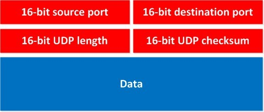
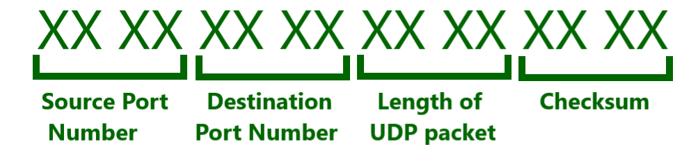
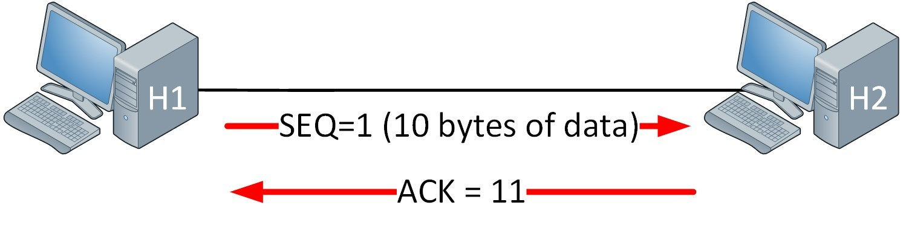
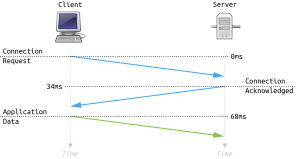
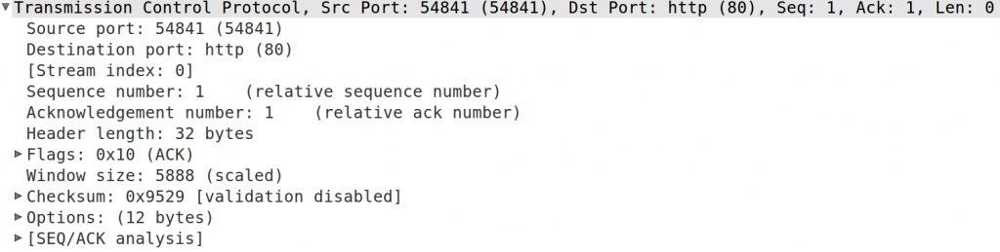

Introduction to TCP and UDP
Quick recap quizاختبار مراجعة سريع
Why two transport protocols?ليه في بروتوكولين للنقل؟
In this lesson we look at our transport protocols TCP and UDP. If you know about IP and IP packets, you know that we require a transport protocol to send our IP packets. We focus on the two used most of the time:
- TCP (Transmission Control Protocolبروتوكول التحكم بالإرسال)
- UDP (User Datagram Protocolبروتوكول داتاجرام المستخدم)
So why do we have 2 different transport protocols, why do we care, and when do we need one over the other? The short answer: TCP is a reliable protocol. UDP is an unreliable or best-effort protocol.
Unreliable? Why would I want data transport that is unreliable? Let's look at two stories.
في الدرس ده هنتكلم عن بروتوكولات النقل TCP و UDP. لو عارف IP و IP packets فأنت عارف إننا محتاجين بروتوكول نقل (transport) عشان نبعت الـ IP packets. هنركز على أكتر اتنين بيتستخدموا:
- TCP (Transmission Control Protocol)
- UDP (User Datagram Protocol)
طب ليه في اتنين، وإمتى نحتاج واحد بدل التاني؟ الإجابة المختصرة: TCP بروتوكول موثوق (reliable). UDP بروتوكول غير موثوق أو best-effort.
غير موثوق؟ ليه أصلاً عايز نقل بيانات غير موثوق؟ خلينا نشوف حكايتين.
Story 1 — the 20 GB movie (why we want reliable)الحكاية 1 — فيلم 20 جيجا (ليه عايزين موثوق)
You are downloading the latest movie in 1080p HD with 7.1 surround sound from a "download on demand" service. The file is 20 GB. After downloading 10 GB something goes wrong and a couple of IP packets don't make it to your computer. When the download finishes you try to play the movie and get all kinds of errors, so you head to the local DVD rental place.
You want the transport of your download to be reliable, which is why we use TCP. If some IP packets don't make it to your computer, that data will be retransmitted.
أنت بتنزّل أحدث فيلم بجودة 1080p وصوت 7.1 من خدمة "download on demand". الملف 20 جيجا، وبعد ما نزل 10 جيجا حصلت مشكلة وكام IP packet ماوصلوش لجهازك. لما التحميل يخلص وتحاول تشغّل الفيلم بتلاقي أخطاء كتير، فتروح لمحل تأجير الـ DVD.
أنت عايز نقل التحميل يكون موثوق (reliable)، عشان كده بنستخدم TCP. لو أي IP packets ماوصلتش، البيانات دي هتتبعت تاني (retransmission).
Story 2 — VoIP (why we want unreliable)الحكاية 2 — VoIP (ليه عايزين غير موثوق)
You are the network engineer of a major company and you implement a new open-source VoIPVoice over IP — مكالمات صوتية على شبكة IP solution to replace the analog phones. Users complain that call quality is horrible. You find out the provider used a reliable transport protocol like TCP, because "we want phone calls to be reliable, right?"
Wrong thinking! TCP does error correction, meaning data that didn't make it will be retransmitted. How weird would your call sound if you heard something the other person said a few seconds ago? It's real-time, so we don't want retransmission. It's better to send VoIP packets and lose a few than retransmit them afterwards; your VoIP codec can also fix packet loss up to a certain degree. Here we want a best-effort or unreliable protocol: UDP.
أنت مهندس الشبكة في شركة كبيرة وعملت حل VoIP مفتوح المصدر بدل التليفونات الأنالوج. المستخدمين بيشتكوا إن جودة المكالمات وحشة جدًا. اكتشفت إن المزوّد استخدم بروتوكول نقل موثوق زي TCP لأن "إحنا عايزين المكالمات تبقى موثوقة، مش كده؟"
تفكير غلط! TCP بيعمل تصحيح أخطاء، يعني أي بيانات ماوصلتش هتتبعت تاني. تخيل هتسمع إيه لو سمعت حاجة الطرف التاني قالها من كام ثانية؟ المكالمة real-time فمش عايزين retransmission. الأحسن نبعت VoIP packets ونفقد كام واحدة بدل ما نعيد إرسالها، وكمان الـ VoIP codec بيقدر يعالج فقد الـ packets لحد درجة معينة. هنا عايزين بروتوكول best-effort أو unreliable: وده UDP.
TCP vs UDP at a glanceTCP مقابل UDP بنظرة سريعة
| TCP | UDP | |
|---|---|---|
| Connection type | Connection-oriented | Connectionless |
| Sequencing | Yes | No |
| Usage | Downloads, File sharing, Printing | VoIP, Video (streaming) |
Connection type: TCP is connection-oriented — it will "set up" a connection and then start transferring data (the "3-way handshake", shown below). UDP is connectionless — it just starts sending and doesn't care whether it arrives or not.
Sequencing: we use a sequence number; if you download a big file you must put all packets back in the right order. UDP has no sequence number.
What about VoIP — don't we need packets in order at the receiver? Yes, otherwise we'd get strange conversations. UDP doesn't offer sequencing, but for VoIP it's not just UDP: we also use RTP, which offers sequencing (and some other features needed for VoIP).
| TCP | UDP | |
|---|---|---|
| نوع الاتصال | Connection-oriented (موجّه بالاتصال) | Connectionless (بدون اتصال) |
| الترتيب (Sequencing) | أيوه | لأ |
| الاستخدام | تحميلات، مشاركة ملفات، طباعة | VoIP، فيديو (streaming) |
نوع الاتصال: TCP موجّه بالاتصال — بيعمل "setup" لاتصال الأول وبعدين يبدأ ينقل البيانات (الـ "3-way handshake" تحت). UDP بدون اتصال — بيبدأ يبعت على طول ومش فارق معاه وصل ولا لأ.
الترتيب: بنستخدم sequence number؛ لو بتنزّل ملف كبير لازم ترجّع كل الـ packets بالترتيب الصح. UDP مفيهوش sequence number.
طب VoIP؟ مش محتاجين نرتّب الـ packets عند المستقبل؟ أيوه محتاجين، وإلا هنسمع كلام مبلبل. UDP مبيدّيش sequencing، لكن في VoIP مش UDP لوحده: بنستخدم كمان RTP اللي بيوفر sequencing (ومميزات تانية محتاجينها للـ VoIP).

The UDP headerهيدر UDP

| Field | Size |
|---|---|
| Source port | 16 bit |
| Destination port | 16 bit |
| UDP length | 16 bit |
| UDP checksum | 16 bit |
| Data | — |
You can see how simple it is: it has the source and destination port number (this is how we know for which application the data is meant), a checksum and the length.
| الحقل | الحجم |
|---|---|
| Source port | 16 بت |
| Destination port | 16 بت |
| UDP length | 16 بت |
| UDP checksum | 16 بت |
| Data | — |
شوف قد إيه بسيط: فيه رقم الـ port المصدر والوجهة (بكده نعرف البيانات دي لأنهي تطبيق)، وchecksum، والـ length.

What we know about UDPاللي عرفناه عن UDP
- It operates on the transport layer of the OSI model.
- It is a connectionless protocol: it does not set up a connection, it just sends data.
- Limited error correction, because we have a checksum.
- Best-effort or unreliable protocol.
- No data-recovery features.
- شغال على طبقة النقل (Transport) في OSI.
- بروتوكول connectionless: مبيعملش اتصال، بيبعت البيانات وخلاص.
- تصحيح أخطاء محدود، لأن عندنا checksum.
- بروتوكول best-effort أو غير موثوق.
- مفيش ميزات لاسترجاع البيانات.
TCP and the 3-way handshakeTCP والـ 3-way handshake
Since TCP is a reliable protocol, it will "set up" a connection before we start sending any data. This is the 3-way handshake. Take two computers, H1 and H2, that want to send data to each other reliably:
- H1 sends a TCP SYN, telling H2 it wants to set up a connection. It includes a sequence number — to keep things simple the lesson picks SEQ=1.
- H2 responds with a SYN,ACK. It picks its own sequence number (SEQ=100, a random number) and sends ACK=2. ACK=2 means: "I received your SYN which had sequence number 1, and I'm ready for the next message with sequence number 2."
- H1 sends an acknowledgement: SEQ=2 ACK=101. It acknowledges the SEQ=100 from H2. Since H2 sent ACK=2, H1 knows it can send the next message with sequence number 2.
Simplified:
- H1 sends a TCP SYN. (I want to talk to you)
- H2 sends a TCP SYN,ACK. (I accept that you want to talk to me, and I want to talk to you as well)
- H1 sends a TCP ACK. (I accept that you want to talk to me)
لأن TCP بروتوكول موثوق، هو بيعمل "setup" لاتصال قبل ما نبدأ نبعت أي بيانات. ده الـ 3-way handshake. خد جهازين H1 و H2 عايزين يبعتوا بيانات لبعض بشكل موثوق:
- H1 بيبعت TCP SYN ويقول لـ H2 إنه عايز يعمل اتصال. فيه sequence number — وعشان نبسّط المرجع اختار SEQ=1.
- H2 بيرد بـ SYN,ACK. بيختار sequence number بتاعه (SEQ=100، رقم عشوائي) وبيبعت ACK=2. معنى ACK=2: "استلمت الـ SYN بتاعك اللي كان رقمه 1، وجاهز للرسالة الجاية برقم 2."
- H1 بيبعت acknowledgement: SEQ=2 ACK=101. بيأكد استلام SEQ=100 من H2. ولأن H2 بعت ACK=2، H1 عارف إنه يقدر يبعت الرسالة الجاية برقم 2.
باختصار:
- H1 بيبعت TCP SYN. (عايز أتكلم معاك)
- H2 بيبعت TCP SYN,ACK. (موافق إنك تتكلم معايا، وأنا كمان عايز أتكلم معاك)
- H1 بيبعت TCP ACK. (موافق إنك تتكلم معايا)

The handshake in Wiresharkالـ handshake في Wireshark
A real capture: computer 192.168.1.2 sets up a connection with 174.143.213.184: it sends a TCP SYN, gets a SYN,ACK back, and finally sends a TCP ACK to finish the 3-way handshake.
| No. | Time | Source | Destination | Info |
|---|---|---|---|---|
| 1 | 0.000000 | 192.168.1.2 | 174.143.213.184 | 54841 > http [SYN] Seq=0 Win=5840 |
| 2 | 0.046770 | 174.143.213.184 | 192.168.1.2 | http > 54841 [SYN, ACK] Seq=0 Ack=1 |
| 3 | 0.046803 | 192.168.1.2 | 174.143.213.184 | 54841 > http [ACK] Seq=1 Ack=1 |
| Packet | Flags | Seq / Ack (relative) | Header length | Window size | Options |
|---|---|---|---|---|---|
| SYN | 0x02 (SYN) | Seq: 0 | 40 bytes | 5840 | 20 bytes |
| SYN, ACK | 0x12 (SYN, ACK) | Seq: 0, Ack: 1 | 40 bytes | — | — |
| ACK | 0x10 (ACK) | Seq: 1, Ack: 1 | 32 bytes | 5888 (scaled) | 12 bytes |

The SYN has the SYN bit set in the Flags section. The SYN,ACK has both SYN and ACK set and acknowledges the SYN from the other computer. The final ACK is where the computer that started the handshake sets the ACK bit and acknowledges the SYN from the other side. Try it yourself: start Wireshark, capture a 3-way handshake, and look for the SYN, SYN-ACK and ACK packets and the pattern in the sequence numbers.
capture حقيقي: الجهاز 192.168.1.2 بيعمل اتصال مع 174.143.213.184: بيبعت TCP SYN، بيستلم SYN,ACK، وأخيرًا بيبعت TCP ACK عشان يكمّل الـ 3-way handshake.
الجدولين فوق بيوروا الـ 3 packets وتفاصيلهم. الـ SYN فيه SYN bit متفعّل في قسم Flags. الـ SYN,ACK فيه SYN و ACK مع بعض وبيأكد الـ SYN من الجهاز التاني. والـ ACK الأخير هو اللي الجهاز اللي بدأ الـ handshake بيفعّل فيه ACK bit ويأكد الـ SYN من الطرف التاني. جرّب بنفسك: شغّل Wireshark والتقط 3-way handshake وشوف الـ SYN و SYN-ACK و ACK وحاول تلاقي النمط في الـ sequence numbers.
Flow control and window sizeFlow control وحجم الـ window
Once the connection is set up we can send data. One of the things TCP offers is flow control. Imagine a fast computer transmitting data to a smartphone: the computer could overburden the smartphone with traffic. In each TCP segment the receiver can specify in the "receive window" field how much data, in bytes, it wants to receive. The sender can only send data up to this size, so the smartphone doesn't get overburdened. The more data you can send each time, the higher your throughput.
Example: H1 has set up a connection with H2 using the 3-way handshake. H1 sends 10 bytes of data (SEQ=1), so the "window size" is 10 bytes. H2 responds with ACK=11, meaning "thanks, I received your 10 bytes, now send me #11 and the rest". TCP is reliable, which is why everything we receive has to be acknowledged.
The larger your window size, the higher your throughput, because you send fewer ACKs compared to the data you send.
بعد ما الاتصال يتعمل نقدر نبعت بيانات. من الحاجات اللي TCP بيقدمها flow control. تخيل كمبيوتر سريع بيبعت بيانات لموبايل: الكمبيوتر ممكن يحمّل الموبايل ترافيك أكتر من طاقته. في كل TCP segment المستقبل بيحدد في حقل "receive window" هو عايز يستلم كام بايت. المرسل مينفعش يبعت أكتر من الحجم ده، فالموبايل مبيتضغطش. وكل ما تقدر تبعت بيانات أكتر كل مرة، الـ throughput بيبقى أعلى.
مثال: H1 عمل اتصال مع H2 بالـ 3-way handshake. H1 بيبعت 10 بايت داتا (SEQ=1)، يعني الـ "window size" = 10 بايت. H2 بيرد بـ ACK=11 ومعناها "شكرًا استلمت الـ 10 بايت، ابعتلي من رقم 11 وكمّل". TCP موثوق عشان كده لازم نأكد استلام كل حاجة.
كل ما الـ window size أكبر، الـ throughput أعلى، لأنك بتبعت ACKs أقل مقارنة بالبيانات.
The TCP header and summaryهيدر TCP وملخص
TCP is a fairly complex protocol; its header has many more fields than UDP. The lesson focuses on these:
| Field | Size | Meaning |
|---|---|---|
| Source port / Destination port | 16 bit each | Port numbers determine for which application the data is meant (this is how we go from the transport layer up to the higher layers of the OSI model). |
| Sequence number | 32 bit | Used for sequencing. |
| Acknowledgment number | 32 bit | Used for the ACK. |
| Flags | — | Where TCP sets the message types like "SYN" or "ACK". |
| Window size | 16 bit | How many bytes of data you will send before you want an acknowledgment from the other side. |
| Checksum | 16 bit | Error check. |
The fields D.O, RSV, urgent pointer and Options are not important for this lesson. The header is followed by the Data.
What we learned about TCP:
- It's a reliable protocol.
- Before you send data you set up the connection using the 3-way handshake.
- After sending X amount of bytes you receive an acknowledgment (ACK) from the other side.
- How many bytes you send before you get an ACK is controlled by the "window size".
- TCP can do retransmissions.
TCP بروتوكول معقّد نسبيًا، والهيدر بتاعه فيه حقول أكتر بكتير من UDP. المرجع بيركز على دول:
| الحقل | الحجم | المعنى |
|---|---|---|
| Source port / Destination port | 16 بت لكل واحد | أرقام الـ ports بتحدد البيانات دي لأنهي تطبيق (كده بنطلع من طبقة النقل للطبقات الأعلى في OSI). |
| Sequence number | 32 بت | للترتيب (sequencing). |
| Acknowledgment number | 32 بت | للـ ACK. |
| Flags | — | المكان اللي TCP بيحدد فيه نوع الرسالة زي "SYN" أو "ACK". |
| Window size | 16 بت | كام بايت هتبعتهم قبل ما تحتاج acknowledgment من الطرف التاني. |
| Checksum | 16 بت | فحص الأخطاء. |
الحقول D.O و RSV و urgent pointer و Options مش مهمة في الدرس ده. بعد الهيدر بييجي الـ Data.
اللي اتعلمناه عن TCP:
- بروتوكول موثوق.
- قبل ما تبعت بيانات بتعمل الاتصال بالـ 3-way handshake.
- بعد ما تبعت X بايت بتستلم acknowledgment (ACK) من الطرف التاني.
- عدد البايتات اللي بتبعتها قبل ما تاخد ACK بيتحكم فيه الـ "window size".
- TCP بيقدر يعمل retransmissions.
From the lesson forumمن منتدى الدرس
- Q: I have no computer background — how do I start with Wireshark? Instructor: dive into the OSI model first; then download Wireshark, make captures while you visit a webpage or download something, and see if you can recognize the TCP 3-way handshake and the OSI layers.
- Comment: tcpdumpأداة سطر أوامر لالتقاط الترافيك على لينكس is like Wireshark but less clunky. Instructor: it's a great Linux tool that needs no GUI — very useful when you SSH into a remote box. For analysis he prefers Wireshark: capture with tcpdump, then open the file in Wireshark.
- سؤال: معنديش خلفية كمبيوتر — أبدأ بـ Wireshark إزاي؟ المدرّب: ابدأ بنموذج OSI الأول؛ بعدين نزّل Wireshark واعمل captures وأنت بتفتح صفحة ويب أو بتنزّل حاجة، وشوف لو تقدر تتعرف على TCP 3-way handshake وطبقات OSI.
- تعليق: tcpdump زي Wireshark بس أخف. المدرّب: أداة لينكس ممتازة مش محتاجة GUI — مفيدة جدًا لما تعمل SSH لجهاز بعيد. للتحليل بيفضّل Wireshark: التقط بـ tcpdump وبعدين افتح الملف في Wireshark.
🧠 Lesson quiz🧠 اختبار الدرس
Wrong = red, correct = green. Reveal the answer any time and translate any question with the 🌐 button.غلط = أحمر، صح = أخضر. تقدر تشوف الإجابة في أي وقت وتترجم أي سؤال بزرار 🌐.